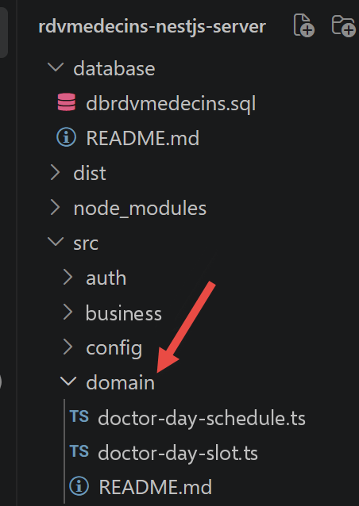
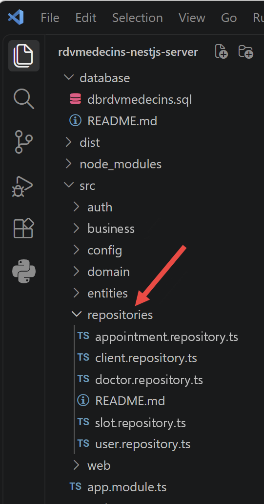
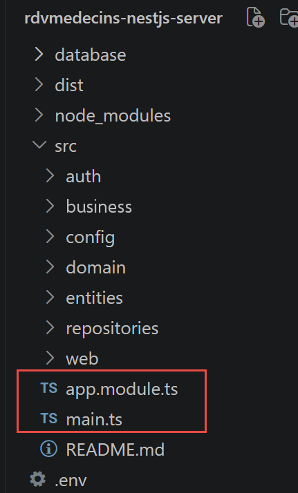

4. Capítulo 3 - O servidor [NestJS] da aplicação [RdvMedecins]
Este capítulo detalha, arquivo por arquivo, o conteúdo da pasta [rdvmedecins-nestjs-server] fornecida com este documento. Ele segue o mesmo formato usado ao longo deste curso: o código-fonte, numerado linha a linha, seguido de uma seção intitulada “Vamos comentar este código”, que explica as linhas que exigem esclarecimentos. Cada pasta de projeto também contém seu próprio arquivo README.md, com uma versão condensada dessas explicações.
4.1. O banco de dados
O banco de dados [dbrdvmedecins] reproduz, em sua estrutura, o do documento original (2014, Spring 4 / [MySQL] 5): as mesmas tabelas — [doctors], [clients], [slots], [appointments] —, as mesmas chaves estrangeiras, a mesma restrição de unicidade. A única novidade, introduzida pela etapa de “autenticação” desta portagem: a tabela [users].
4.1.1. [database/dbrdvmedecins.sql]
Vamos comentar este código:
- linhas 20–24: [DROP TABLE IF EXISTS …] — o script parte de um banco vazio a cada execução, na ordem inversa das dependências (começando por `appointments`, que referencia `[slots]` e `clients`, até chegar a `users`, que não é referenciada por ninguém): o [MySQL] recusaria excluir uma tabela ainda referenciada por uma chave estrangeira;
- linha 48: [doctor_id INT NOT NULL], depois linha 53: [CONSTRAINT fk_slots_doctor FOREIGN KEY …] — um horário sempre pertence a um médico;
- linha 64: [CONSTRAINT unq1_appointments UNIQUE (day, slot_id)] — a regra de negócio central da aplicação: o mesmo horário no mesmo dia só pode ser reservado uma vez. É essa restrição, e somente ela, que impede uma consulta duplicada — nem o validador nem a camada de negócio a reverificam explicitamente (veja abaixo, addAppointment);
- linhas 67–74: [CREATE TABLE users (…)] — a tabela adicionada por esta etapa. `login` é UNIQUE (dois usuários não podem ter o mesmo login); `password` armazena uma senha com hash bcrypt (nunca em texto puro); role é 'ADMIN' ou 'USER' — uma simples coluna de texto, enquanto o documento original usava três tabelas (users, roles, users_roles) para permitir vários papéis por usuário. Como esta aplicação exige apenas dois papéis mutuamente exclusivos, a relação muitos-para-muitos original seria mais do que o necessário;
- linhas 91–93: [INSERT INTO users …] — duas contas de demonstração, admin/admin (papel ADMIN) e user/user (papel USER), com as senhas já com hash bcrypt (10 rodadas de salt) — nunca em texto puro, nem mesmo neste script de demonstração.
4.2. Organização em camadas
O servidor segue a estrutura em camadas do projeto original:

Cada camada se comunica apenas com a camada imediatamente à sua direita, [5-8]: assim, o controller [5] nunca se comunica diretamente com a camada [7], por exemplo. Isso segue o mesmo princípio de projeto do projeto Spring original e torna cada camada substituível independentemente das outras.
4.3. As entidades [TypeORM] (src/entities/)
As entidades são as classes que representam linhas de tabelas do banco como objetos TypeScript — o equivalente direto das entidades JPA do projeto original (pacote rdvmedecins.entities).
4.3.1. src/entities/abstract.entity.ts

Vamos comentar este código:
- linha 4: [@PrimaryGeneratedColumn()] — declara uma chave primária com autoincremento pelo SGBD — o equivalente exato de @Id + @GeneratedValue(strategy = GenerationType.AUTO) no JPA;
- linha 7: [@VersionColumn()] — mecanismo nativo do [TypeORM] para bloqueio otimista: o [TypeORM] incrementa automaticamente essa coluna a cada modificação e gera um erro se você tentar salvar uma entidade cuja versão não coincide mais com a do banco (alguém a modificou nesse meio tempo) — o equivalente exato de @Version no JPA/Hibernate;
- linha 3: [export abstract class AbstractEntity {] — esta classe não é decorada com [@Entity]: ela não corresponde a nenhuma tabela por si só. O [TypeORM] chama essa técnica de “Concrete Table Inheritance”: cada subclasse decorada com [@Entity] recebe sua própria tabela, com todas as colunas herdadas — o equivalente exato de @MappedSuperclass no JPA.
4.3.2. src/entities/person.entity.ts
Vamos comentar este código:
- linha 4: [export abstract class Person extends AbstractEntity {] — reúne os campos comuns a um médico e a um paciente (título, sobrenome, nome), herdando id/version ([AbstractEntity]). Como a classe pai, ela não é decorada com [@Entity]: é a contrapartida, no [TypeORM], da classe [Personne] — que também é @MappedSuperclass — do projeto original;
- linhas 5, 8, 11: [@Column({ length: N })], [@Column({ name: '...', length: N })] — três colunas de texto de tamanho limitado (a opção name fornece o nome real da coluna em snake_case: last_name, first_name), equivalente a [@Column](length = N) private String ... no JPA.
4.3.3. src/entities/doctor.entity.ts
Vamos comentar este código:
- linha 5: [@Entity({ name: 'doctors' })] — declara a classe como entidade [TypeORM], persistida na tabela [doctors] — o equivalente exato de [@Entity] + @Table(name = "[doctors]") no JPA;
- linha 6: [export class Doctor extends Person {] — herda title/lastName/firstName (de [Person]) e id/version (de [AbstractEntity]), sem precisar redeclará-los;
- linha 7: [@OneToMany(() => Slot, (slot) => slot.doctor)] — declara a relação inversa “um médico tem vários horários”: um recurso de navegação por conveniência, ausente do projeto original (que a declarava apenas no outro sentido, do lado de [Creneau]), mas fácil de adicionar com o TypeORM.
4.3.4. src/entities/client.entity.ts
Vamos comentar este código:
- linhas 4–5: [@Entity({ name: 'clients' }) export class Client extends Person {}] — exatamente o mesmo princípio de [Doctor], sem relações adicionais: uma tabela [clients], com as mesmas três colunas herdadas de Person. Lembrete de vocabulário: [Client] refere-se aqui a um paciente da clínica médica (vocabulário do domínio de negócio original), a não confundir com “cliente HTTP”.
4.3.5. src/entities/slot.entity.ts
Vamos analisar este código:
- linhas 7–10: [@Column({ name: 'start_hour' }) startHour: number; …] — os quatro limites de tempo do horário de consulta (hora e minuto de início e de fim), quatro inteiros simples, cada um mapeado para sua coluna em snake_case (start_hour, start_minute, end_hour, end_minute);
- linha 12: [@ManyToOne(() => Doctor, (doctor) => doctor.slots)] — vários horários pertencem ao mesmo médico. Por padrão, o [TypeORM] não carrega a relação “doctor” ao ler um horário (comportamento “lazy” padrão): é preciso solicitá-la explicitamente (opção de relação: [...] em uma consulta) — exatamente como o FetchType.LAZY exigia, no lado JPA, um `left join fetch` explícito na consulta JPQL para recuperar o médico;
- linha 13: [@JoinColumn({ name: 'doctor_id' })] — especifica o nome da coluna de chave estrangeira na tabela [slots];
- linha 16: [@RelationId((slot: Slot) => slot.doctor)] — o equivalente exato e idiomático, no lado do [TypeORM], do campo somente leitura idMedecin do projeto original ([@Column](name = "id_medecin", insertable = false, updatable = false)): ele expõe diretamente o valor da chave estrangeira, sem precisar carregar a entidade [Doctor] inteira — útil para construir respostas JSON leves (veja abaixo, a camada web).
Nota: Um campo [@RelationId] é uma coluna virtual, calculada a posteriori pelo [TypeORM] — não é uma verdadeira coluna SQL utilizável em uma cláusula WHERE de um “query builder” (veja abaixo, [SlotRepository]). Serve unicamente para recuperar o valor da chave estrangeira depois que a entidade foi carregada.
4.3.6. src/entities/appointment.entity.ts
Vamos comentar este código:
- linha 7: [@Unique('unq1_appointments', ['day', 'slot'])] — reproduz, no lado do [TypeORM], a restrição SQL do script do banco de dados. Atenção: aqui referenciamos o nome da relação (“slot”), e não o campo [@RelationId] (“slotId”) — este é uma coluna virtual, que o [TypeORM] não aceita em uma restrição @Unique. O [TypeORM] mapeia por conta própria 'slot' para sua coluna real de chave estrangeira (slot_id);
- linha 9: [@Column({ type: 'date' })] — tipo 'date' (e não 'datetime'): só o dia é mantido, não a hora — exatamente como TemporalType.DATE especificava no lado JPA;
- linhas 12–18: [@ManyToOne(...) / @JoinColumn(...)] — duas relações, com [Client] e com [Slot], seguindo o mesmo princípio de [slot.entity.ts];
- linhas 20–24: [@RelationId(...)] — os equivalentes somente leitura dos campos idClient/idCreneau do projeto original (mesmo mecanismo de Slot.doctorId; veja acima).
4.3.7. src/entities/user.entity.ts
Vamos comentar este código:
- linha 4: [export type Role = ‘ADMIN’ | ‘USER’;] — uma simples união de duas strings em TypeScript: os dois únicos papéis gerenciados pela aplicação. Esse tipo é reutilizado em todos os outros lugares em que um papel é manipulado (roles.decorator.ts, jwt.strategy.ts, o cliente [Vue.js]…);
- linha 6: [@Entity({ name: 'users' })] — como as demais entidades, uma tabela própria;
- linha 12: [password: string;] — armazena uma senha com hash (bcrypt), nunca em texto puro — veja auth.service.ts;
- linha 18: [role: Role;] — uma única coluna, em vez da relação muitos-para-muitos (users/roles/users_roles) do projeto Spring original. Esta aplicação reconhece apenas dois papéis mutuamente exclusivos (um usuário é ADMIN ou USER, nunca ambos): reconstruir a relação original teria acrescentado complexidade sem nenhum benefício real. É uma simplificação deliberada, com fins didáticos, assim como a enumeração `[ResponseStatus]` encontrada anteriormente neste capítulo.
4.4. Objetos de negócio (src/domain/)

Essas classes não correspondem a nenhuma tabela do banco de dados: são construídas na hora, combinando várias entidades para representar um conceito útil à aplicação (“a agenda do Dr. Pelissier em 13/09/2026”), mas que não precisa ser armazenado como tal. Equivalem à subpasta (ou pacote) “domain” do projeto original.
4.4.1. src/domain/doctor-day-slot.ts
Vamos comentar este código:
- linha 4: [export class DoctorDaySlot {] — associa um horário à consulta que pode ter sido agendada nesse horário, para um determinado dia;
- linhas 5–8: [constructor(public slot: Slot, public appointment: Appointment | null) {}] — a sintaxe [public] diretamente nos parâmetros do construtor é um atalho do TypeScript: declara E inicializa as duas propriedades em uma única linha cada, sem precisar escrever [this.slot = slot] separadamente. [appointment] é null quando o horário está livre.
4.4.2. src/domain/doctor-day-schedule.ts
Vamos comentar este código:
- linha 4: [export class DoctorDaySchedule {] — a agenda completa de um médico em um determinado dia: o médico em questão, o dia e a lista de seus horários (cada um marcado como livre ou reservado; veja [DoctorDaySlot] acima);
- linha 8: [public doctorDaySlots: DoctorDaySlot[],] — calculada por [BusinessService.getDoctorDaySchedule] (veja abaixo); é essa lista que o controller converte em JSON para o cliente [Vue.js].
4.5. A camada DAO (src/repositories/)
A camada DAO (Data Access Object) é a única parte do projeto que se comunica diretamente com o TypeORM/MySQL — o equivalente às interfaces do Spring Data do projeto original (pacote rdvmedecins.repositories).

A diferença mais importante a entender entre o Spring Data e o [TypeORM]: com o Spring Data, bastava declarar uma interface (extends CrudRepository<...>) para obter automaticamente os métodos básicos (findAll, findOne, save, delete etc.) — o próprio Spring gerava, na inicialização, uma classe que a implementava. Com o [TypeORM], não há geração automática de uma implementação a partir de uma interface: injetamos diretamente o Repository<Entity> genérico fornecido pelo [TypeORM] (por meio de [@InjectRepository]) e escrevemos nós mesmos os métodos que queremos expor, apoiando-nos nos métodos predefinidos desse Repository ou usando o query builder para consultas mais específicas.
4.5.1. src/repositories/doctor.repository.ts
Vamos comentar este código:
- linha 9: [@InjectRepository(Doctor)] — pede ao [NestJS] que forneça o Repository<[Doctor]> gerado automaticamente pelo [TypeORM] para a entidade Doctor. Equivale à injeção automática (@Autowired) da implementação gerada pelo Spring Data;
- linha 14: [return this.repository.find();] — equivalente a medecinRepository.findAll(), herdado de CrudRepository;
- linha 18: [return this.repository.findOneBy({ id });] — equivalente a medecinRepository.findOne(id); retorna null se nenhum médico tiver esse ID (como o findOne do Spring Data, em vez de lançar uma exceção).
4.5.2. src/repositories/client.repository.ts
Este arquivo é exatamente igual, em princípio, ao [DoctorRepository] (veja a explicação acima), mas aplicado à entidade [Client] (um paciente).
4.5.3. src/repositories/slot.repository.ts
Vamos comentar este código:
- linhas 13–19: [findAll() / findById(id)] — idênticos ao princípio já visto no [DoctorRepository];
- linha 21: [getAllSlots(doctorId: number): Promise<Slot[]> {] — uma consulta “personalizada”, equivalente à consulta JPQL original select c from [Creneau] c where c.medecin.[id]=?1;
- linha 23: [.createQueryBuilder(‘s’)] — o alias SQL s é nomeado, assim como [Creneau] c é nomeado em JPQL;
- linha 24: [.where(‘s.doctor = :doctorId’, { doctorId })] — aqui, comparamos a própria relação (s.doctor), e não o campo [@RelationId] (s.doctorId): como observado acima (slot.entity.ts), este não é uma coluna utilizável em um WHERE. Ao comparar a relação com um número, o [TypeORM] reconhece que se visa sua chave estrangeira e gera o SQL correto, sem join;
- linhas 25–26: [.orderBy(‘s.startHour’, ‘ASC’).addOrderBy(‘s.startMinute’, ‘ASC’)] — ordena os horários em ordem cronológica, um acréscimo útil que não existia explicitamente na versão Spring original.
4.5.4. src/repositories/appointment.repository.ts
Vamos comentar este código:
- linhas 13–18: [findById(id) { … relations: [‘client’, ‘slot’] }] — relações: [...] instrui explicitamente o [TypeORM] a carregar também o cliente e o horário associados (lembrete: essas relações são “lazy” por padrão; veja slot.entity.ts) — útil para construir o JSON de resposta (veja abaixo, getMapForAppointment);
- linha 21: [return this.repository.save(appointment);] — equivalente a rvRepository.save(new Rv(jour, client, creneau));
- linha 25: [await this.repository.delete(id);] — equivalente a rvRepository.delete(rv.getId());
- linha 28: [getDoctorDayAppointments(doctorId: number, day: string): Promise<Appointment[]> {] — equivalente à consulta JPQL original SELECT rv FROM Rv rv LEFT JOIN FETCH rv.client c LEFT JOIN FETCH rv.creneau cr WHERE cr.medecin.[id]=?1 and rv.[jour]=?2;
- linhas 31–32: [.leftJoinAndSelect(‘appointment.client’, ‘client’) / .leftJoinAndSelect(‘appointment.slot’, ‘slot’)] — o equivalente ao LEFT JOIN FETCH do JPQL original: recupera, em uma única consulta SQL, o cliente e o horário associados a cada consulta;
- linha 33: [.where(‘slot.doctor = :doctorId’, { doctorId })] — condição sobre o médico, obtida por meio de um join com o horário (rv.creneau.medecin.[id]=?1 em JPQL) — mais uma vez, comparamos a relação “doctor”, e não o campo [@RelationId] correspondente.
4.5.5. src/repositories/user.repository.ts
Vamos comentar este código:
- linha 13: [findByLogin(login: string): Promise<User | null> {] — o único método de busca necessário aqui, usado pelo login (veja auth.service.ts): substitui a busca de papéis em três tabelas do projeto original, que se tornou desnecessária com a simplificação para uma única coluna [role] (veja user.entity.ts).
4.6. A camada de negócio (src/business/)
É aqui, e em nenhum outro lugar, que residem as regras de negócio da aplicação — equivalente ao pacote rdvmedecins.metier do projeto original.
4.6.1. src/business/business.interface.ts
Vamos comentar este código:
- linha 7: [export interface IBusiness {] — o contrato da camada de negócio, independente de sua implementação — o equivalente exato da interface Java [IMetier] do projeto original;
- linhas 8–18: onze métodos, um para cada necessidade da aplicação (listagens, buscas por ID, adição/exclusão de consultas, cálculo da agenda);
- linha 21: [export const BUSINESS_TOKEN = ‘IBusiness’;] — definimos um “token” de injeção (InjectionToken) para poder injetar essa interface no controller, exatamente como o Spring injetava a referência de negócio [IMetier] sem conhecer sua classe de implementação concreta [Metier]. No TypeScript, as interfaces são eliminadas na compilação: portanto, não podem ser usadas diretamente como tokens de injeção ([NestJS]); esse contorno é necessário (veja seu uso em app.module.ts e application-model.service.ts).
4.6.2. src/business/business.service.ts
Vamos comentar este código:
- linha 10: [export class BusinessService implements IBusiness {] — [@Injectable]() equivale a @Service("métier"): essa classe se torna um “provider” ([NestJS]) que o [NestJS] pode construir e injetar onde necessário;
- linhas 11–16: [constructor(private readonly doctorRepository: …, …) {}] — injeção das quatro instâncias DAO, equivalente aos quatro campos @Autowired do projeto original. O [NestJS] opta aqui pela injeção por construtor, e não pela injeção em campo (como faz o @Autowired em um campo Java): é a abordagem recomendada em TypeScript; ela torna as dependências explícitas e facilita os testes;
- linhas 18–23: a maioria dos métodos simplesmente delega à camada DAO — sem lógica de negócio própria;
- linhas 25–31: [addAppointment(…) { const appointment = new Appointment(); … }] — cria uma nova entidade Appointment e a salva; é a restrição SQL unq1_appointments (veja acima, o script do banco de dados), e somente ela, que impede uma reserva duplicada — nenhuma verificação explícita é feita aqui; uma tentativa duplicada disparará uma exceção SQL, propagada pela camada DAO;
- linha 37: [async getDoctorDaySchedule(doctorId: number, day: string): Promise<DoctorDaySchedule | null> {] — o único método da camada de negócio que realiza lógica de negócio de fato (os demais apenas delegam): calcula a agenda completa de um médico em um determinado dia. O algoritmo é reproduzido exatamente como no documento original, em três etapas;
- linha 42: [const timeSlots = await this.getAllSlots(doctorId);] — 1. recuperar todos os horários do médico;
- linha 43: [const bookings = await this.getDoctorDayAppointments(doctorId, day);] — 2. recuperar todas as consultas do médico no dia solicitado;
- linhas 45–48: [const hBookings = new Map<number, Appointment>(); …] — essas consultas são armazenadas em um dicionário indexado pelo ID do horário, para poderem ser recuperadas rapidamente na etapa seguinte — equivalente ao `Map<Long, Rv> hReservations` do código original;
- linhas 50–53: [const doctorDaySlots = timeSlots.map((slot) => { … })] — 3. para cada horário, verificamos se ele corresponde a uma das reservas encontradas: se sim, está “ocupado” (associamos a ele a consulta encontrada); caso contrário, está “livre” (appointment = null).
4.7. A camada web (src/web/)
Este é o ponto de entrada HTTP da aplicação — o equivalente ao pacote [rdvmedecins.web] do projeto original.

4.7.1. src/web/models/response.model.ts
Vamos comentar este código:
- linhas 1–6: [export enum ResponseStatus { … }] — o projeto Spring original usava números “ad hoc” (0, 1, 2, 3, 4…) cujo significado variava de um método de controller para outro. Esta portagem aproveita para consolidar todos os códigos possíveis em uma única enumeração, mais fácil de aprender e de manter: o comportamento observável pelo cliente (0 = sucesso, qualquer outro valor = falha) permanece estritamente o mesmo;
- linha 8: [export class ServerResponse<T = unknown> {] — o corpo de resposta comum a todas as respostas JSON do serviço web: { "status": 0, "data": ... }. Novidade em relação ao original: esta classe é genérica ([ServerResponse]<T>) graças ao TypeScript, de modo que o tipo dos dados é conhecido em tempo de compilação (por exemplo, [ServerResponse]<[Doctor][]>) — a linguagem Java do projeto original não permitia isso tão facilmente com um tipo `Object`;
- linhas 17–19: [static ok<T>(data: T): ServerResponse<T> {] — um pequeno método estático de “fábrica”, para escrever um código de controller mais legível (ServerResponse.ok([doctors]) em vez de new [ServerResponse](ResponseStatus.OK, [doctors]));
- linhas 21–23: [static error<T = unknown>(status: ResponseStatus, data: T | null = null): ServerResponse<T> {] — sua contrapartida para respostas de erro.
4.7.2. src/web/models/post-add-appointment.dto.ts
Vamos comentar este código:
- linha 3: [export class PostAddAppointmentDto {] — descreve o formato do corpo JSON esperado pela rota /addAppointment ({ day, clientId, slotId }) — um “DTO” (Data Transfer Object), uma classe cujo único objetivo é descrever o formato dos dados trocados, sem nenhuma lógica;
- linha 4: [@IsDateString()] — verifica se a string recebida é de fato uma data válida no formato ISO. Se não for, o [NestJS] retorna automaticamente um erro HTTP 400 (Bad [Request]) antes de executar o controller — graças ao [ValidationPipe] global declarado em [main.ts] (veja abaixo);
- linhas 7, 10: [@IsInt()] — verifica se o valor recebido é de fato um inteiro. Esses decoradores, combinados com o [ValidationPipe], são o equivalente, no [NestJS], das conversões automáticas de tipo que o Spring MVC realizava com @RequestBody.
4.7.3. src/web/models/post-delete-appointment.dto.ts
Mesmo princípio do [PostAddAppointmentDto] acima, para o corpo JSON esperado por /deleteAppointment ({ appointmentId }).
4.7.4. src/web/helpers/static.helper.ts
Vamos comentar este código:
- linha 4: [export function getErrorsForException(exception: unknown): string[] {] — equivalente a Static.getErreursForException (Exception exception). O Java podia encadear exceções (exception.getCause()) para explicar “por que” uma exceção ocorreu; no JavaScript/TypeScript moderno (ES2022), os erros também têm uma cadeia de causas, por meio da propriedade `cause`;
- linhas 6–10: [while (cause instanceof Error) { … cause = cause.cause; }] — o tratamento é feito da mesma forma que no código Java original, empilhando cada mensagem encontrada;
- linhas 17–19: [export interface SlotJson { … }] — a entidade [Slot] não é retornada como está em JSON: ela contém uma relação com “doctor” que, se carregada, duplicaria informações já conhecidas do cliente (o cliente já sabe de qual médico se trata; veja o parâmetro {doctorId} na URL). Construímos, portanto, um objeto “personalizado” contendo apenas os campos necessários para a exibição;
- linha 21: [export function getMapForSlot(slot: Slot | null | undefined): SlotJson | null {] — equivalente a Static.getMapForCreneau ([Creneau] horário): converte uma entidade em um objeto JSON leve;
- linha 29: [export function getListMapForSlots(slots: Slot[]): SlotJson[] {] — sua contrapartida para uma lista inteira (equivalente a Static.getListMapForCreneaux);
- linhas 33–38, 40–50, 52–54: [AppointmentJson / getMapForAppointment / getListMapForAppointments] — mesmo princípio, aplicado às consultas: o cliente embutido (appointment.client) também é reduzido apenas aos campos necessários para a exibição.
4.7.5. src/web/application-model.service.ts
Vamos comentar este código:
- linha 6: [export class ApplicationModelService implements IBusiness, OnModuleInit {] — equivalente à classe ApplicationModel do projeto original: um cache, construído uma única vez quando o servidor inicia, que armazena em memória a lista de médicos e de clientes (listas curtas e pouco alteradas, sem necessidade de consultar o banco de dados a cada requisição). Esta classe tem dois propósitos, como no original: atua como cache, por um lado, e como único ponto de entrada do controller para a camada de negócio, por outro — se a estratégia de cache mudar um dia, apenas este arquivo precisará ser modificado;
- linha 11: [constructor(@Inject(BUSINESS_TOKEN) private readonly business: IBusiness) {}] — aqui, a interface [IBusiness] é injetada (por meio do token [BUSINESS_TOKEN], veja app.module.ts), e não a classe concreta [BusinessService] — exatamente como o código Java original escrevia @Autowired private [IMetier] métier; sem jamais mencionar a classe Metier;
- linha 13: [async onModuleInit(): Promise<void> {] — [OnModuleInit] é a interface de “ciclo de vida” do [NestJS], que desempenha exatamente o mesmo papel que @PostConstruct no Spring: onModuleInit() é chamado automaticamente pelo [NestJS] logo depois que todas as dependências dessa classe foram injetadas;
- linhas 17–18: [catch (ex) { this.messages = getErrorsForException(ex); }]— se o banco de dados estiver indisponível na inicialização, o erro é capturado e armazenado em `messages`, em vez de derrubar o servidor — exatamente o comportamento do projeto original;
- linha 26: [async getAllClients(): Promise<Client[]> { return this.clients; }] — as listas de médicos e de clientes vêm do cache; todo o resto (linha 29 em diante) é simplesmente delegado à camada de negócio.
4.7.6. src/web/rdvmedecins.controller.ts
O RdvMedecinsController declara as onze rotas da aplicação, que intencionalmente espelham, traduzidas para o inglês, as do documento original (/getAllDoctors para /getAllMedecins, /addAppointment para /ajouterRv…) em vez de “modernizadas” no estilo REST (/doctors, /clients/:id…) — O objetivo deste documento é comparar as duas implementações, não modernizar a API.
1 2 3 4 5 6 7 8 9 10 11 12 13 14 15 16 17 18 19 20 21 22 23 24 25 26 27 28 29 30 31 32 33 34 35 36 37 38 39 40 41 42 43 44 45 46 47 48 49 50 51 52 53 54 55 56 57 58 59 60 61 62 63 64 65 66 67 68 69 70 71 72 73 74 75 76 77 78 79 80 81 82 83 84 85 86 87 88 89 90 91 92 93 94 95 96 97 98 99 100 101 102 103 104 105 106 107 108 109 110 111 112 113 114 115 116 117 118 | |
Vamos comentar este código:
- linha 12: [@UseGuards(JwtAuthGuard)] — aplicado à classe, protege de uma só vez as onze rotas deste controller: nenhuma é acessível sem um token JWT válido (veja o capítulo “Autenticação” abaixo). Equivale à regra original do Spring Security .antMatchers("/**").hasRole("ADMIN"), exceto que aqui a única exigência é estar autenticado (qualquer papel) — a restrição ao papel ADMIN se aplica apenas às duas rotas que modificam dados (linhas 75–76 e 95–96);
- linha 13: [@Controller()] — sem prefixo: as rotas são, portanto, exatamente /getAllDoctors, /getAllClients etc. Equivale ao @RestController do Spring: cada valor retornado por um método é serializado automaticamente como JSON;
- linha 15: [constructor(private readonly application: ApplicationModelService) {}] — injeção do cache/fachada, equivalente a @Autowired private ApplicationModel application; ;
- linhas 19–22: [const messages = this.application.getMessages(); if (messages !== null) { … }] — primeiro, verificamos se a aplicação foi inicializada corretamente (veja ApplicationModelService.onModuleInit), equivalente a `if (messages != null) { return new [Reponse](-1, messages); }`;
- linha 33: [async getAllSlots(@Param('doctorId') doctorId: string) {] — [@Param]('doctorId') recupera o segmento {doctorId} da URL, como string (semelhante a @PathVariable(String) no Spring); nós mesmos o convertemos em número (linha 34), enquanto o Spring faria isso automaticamente para um parâmetro declarado como `long`;
- linhas 35–38: [const doctor = await this.application.getDoctorById(id); if (doctor === null) { … }] — primeiro recuperamos o médico para verificar se ele existe antes de prosseguir (equivalente ao método privado getMedecin(id) do controller original);
- linha 41: [return ServerResponse.ok(getListMapForSlots(slots));] — converte a lista de entidades [Slot] em uma lista de objetos JavaScript “leves” (veja static.helper.ts);
- linha 59: [return ServerResponse.ok({ doctor: …, day: …, slots: … });] — a agenda é formatada no modo “leve” para JSON, seguindo os mesmos princípios de getMapForSlot/getMapForAppointment;
- linha 75: [@UseGuards(RolesGuard)], depois a linha 76: [@Roles('ADMIN')] — além de estar autenticado (já exigido por [@UseGuards]([JwtAuthGuard]) para a classe), é preciso ter aqui o papel ADMIN — o papel USER recebe uma resposta 403 Forbidden (veja roles.guard.ts). [RolesGuard] lê request.user (fornecido por JwtAuthGuard/JwtStrategy): portanto, ele deve ser executado depois de [JwtAuthGuard] ([NestJS] aplica primeiro os guards da classe, depois os dos métodos, na ordem em que aparecem);
- linhas 87–92: [try { const appointment = await this.application.addAppointment(…); … } catch (e) { … }] — neste ponto, o class-validator (veja [PostAddAppointmentDto]) já verificou que post.[day] é uma data válida e que post.clientId/post.slotId são de fato inteiros. A restrição SQL unq1_appointments (day, slot_id) impede que duas reservas sejam feitas para o mesmo horário no mesmo dia: uma tentativa duplicada lançará uma exceção, capturada aqui, exatamente como a SQLException do driver JDBC original;
- linha 95: mesma restrição da linha 75, para deleteAppointment: somente o papel ADMIN pode cancelar uma consulta;
- Linha 112: [function isValidDate(day: string): boolean {] — uma pequena função utilitária local, equivalente ao par SimpleDateFormat("yyyy-MM-dd") + setLenient(false) do código original, que rejeitava, por exemplo, “2026-13-40” (mês e dia inválidos): Date.toISOString() reconstrói a data a partir da string recebida — se ela for diferente da entrada, significa que a data não existia.
4.8. Autenticação (src/auth/)

Esta seção documenta a adição, nesta etapa do curso, da autenticação baseada em token (JWT) e do controle de acesso baseado em papéis (ADMIN/USER) - o equivalente funcional da camada Spring Security do documento original, reescrita com ferramentas padrão do ecossistema [NestJS]: [@nestjs/passport] e @nestjs/jwt.
Duas diferenças intencionais em relação ao projeto original, documentadas aqui de uma vez por todas:
- JWT em vez de HTTP Basic. O projeto Spring original enviava o cabeçalho Authorization: Basic <login:senha em Base64> a cada requisição: a senha (codificada, não criptografada) era, portanto, transmitida pela rede a cada chamada. Este port usa, em vez disso, um token: JWT (JSON Web Token). A senha é apresentada uma única vez, no login (POST /login); o servidor então devolve um token assinado, que o cliente passa a incluir em todas as requisições seguintes (cabeçalho Authorization: Bearer <token>). Essa é a prática atual para este tipo de API, como já mencionado na conclusão do capítulo anterior.
- Um papel por usuário, uma única coluna no banco de dados, em vez da relação muitos-para-muitos (users/roles/users_roles) do projeto original — veja user.entity.ts acima.
Um ponto de arquitetura a entender antes de ler o código a seguir: quando um Guard rejeita uma requisição (401 Unauthorized, 403 Forbidden), a resposta nunca passa pelo envelope habitual [ServerResponse]<T> ({ status, data }): [NestJS] responde diretamente em seu formato JSON nativo, { statusCode, message, error }. Trata-se de uma escolha deliberada: os erros de segurança são tratados antes de entrar no controller (por um guard), ao passo que [ServerResponse]<T> é gerado pelo controller para erros de negócio (recurso não encontrado, data inválida etc.). O cliente [Vue.js] deve, portanto, distinguir esses dois tipos de resposta de erro (veja o capítulo seguinte, auth.interceptor.ts).
4.8.1. src/auth/dto/login.dto.ts
Vamos comentar este código:
- linha 3: [export class LoginDto {] — descreve o formato do corpo JSON esperado por POST /login ({ login, password }), o mesmo mecanismo do DTO já encontrado em src/web/models;
- linhas 4–5, 8–9: [@IsString() @IsNotEmpty()] — verifica se os dois campos são strings não vazias.
Este DTO tem aqui uma finalidade puramente informativa: na verdade, é [LocalStrategy] (veja abaixo) que lê {login, password} do corpo da requisição, e não um parâmetro [@Body]([LoginDto]) do controller - Ainda assim, [LoginDto] ilustra para o leitor o formato exato esperado por esta rota.
4.8.2. src/auth/login-result.model.ts
Vamos comentar este código:
- linha 3: [export interface LoginResult {] — o formato dos dados retornados por POST /login em caso de sucesso, no envelope padrão [ServerResponse]<T>: { "status": 0, "data": { accessToken, login, name, role } } ;
- linha 4: [accessToken: string;] — o token JWT a ser incluído em todas as requisições seguintes;
- linha 7: [role: Role;] — o papel do usuário conectado, para que o cliente [Vue.js] possa adaptar sua interface (veja o próximo capítulo, ocultando os botões “Reservar”/“Cancelar” para o papel USER).
4.8.3. src/auth/local.strategy.ts
Uma “strategy” do Passport descreve como autenticar uma requisição. [LocalStrategy] lê um par {login, password} do corpo de uma requisição POST e delega a verificação ao AuthService. Ela é usada uma única vez, pela rota POST /login (por meio de [LocalAuthGuard]): todas as outras rotas protegidas usarão [JwtStrategy] (veja abaixo), e não esta.
Vamos detalhar este código:
- linha 8: [export class LocalStrategy extends PassportStrategy(Strategy) {] — conceitualmente equivalente à classe AppUserDetailsService do projeto Spring Security original: “dadas algumas credenciais, diga-me quem é este usuário”;
- linha 10: [super({ usernameField: ‘login’, passwordField: ‘password’ });] — por padrão, o passport-local espera campos chamados “username” e “password” no corpo da requisição; aqui os renomeamos para corresponder ao nosso DTO ([LoginDto]), que usa “login” em vez de “username”;
- linha 13: [async validate(login: string, password: string): Promise<User> {] — chamado automaticamente pelo Passport com os dois campos extraídos da requisição. O que ele retorna torna-se request.user no controller (veja auth.controller.ts);
- linha 16: [throw new UnauthorizedException(‘incorrect login or password’);] — o Passport converte automaticamente essa exceção em uma resposta HTTP 401 Unauthorized, antes de ela sequer chegar ao controller.
4.8.4. src/auth/jwt.strategy.ts
A segunda strategy do Passport: ela lê um token JWT do cabeçalho HTTP Authorization: Bearer <token> de cada requisição, verifica sua assinatura e extrai a identidade do usuário — sem nunca consultar o banco de dados (o token já contém tudo o que é necessário). É o mecanismo que protege as onze rotas de RdvMedecinsController.
Vamos comentar este código:
- linhas 5–9: [export interface JwtPayload { sub: number; login: string; role: … }] — o formato das informações que escolhemos armazenar no token JWT quando ele foi gerado (veja auth.service.ts); sub (“subject”) é o nome convencional, em JWT, do campo que contém o identificador do usuário;
- linhas 11–15: [export interface ConnectedUser { … }] — o que request.user conterá nos controllers depois que o token for verificado;
- linha 18: [export class JwtStrategy extends PassportStrategy(Strategy, ‘jwt’) {] — o segundo argumento 'jwt' dá nome a esta strategy (ao contrário de [LocalStrategy], que não especificou nenhum): é o nome que [JwtAuthGuard] ([AuthGuard]('jwt'), veja abaixo) usa para dizer “use esta strategy”;
- linha 21: [jwtFromRequest: ExtractJwt.fromAuthHeaderAsBearerToken(),] — o token é esperado no cabeçalho Authorization: Bearer xxx;
- linha 22: [ignoreExpiration: false,] — se o token tiver expirado, o Passport o rejeita (401) antes mesmo de chamar validate();
- linha 23: [secretOrKey: process.env.JWT_SECRET ?? ‘…’] — a chave secreta usada para verificar a assinatura do token — a mesma usada para assiná-lo (veja auth.module.ts, que a lê da mesma variável de ambiente, JWT_SECRET);
- linha 27: [validate(payload: JwtPayload): ConnectedUser {] — chamado automaticamente pelo Passport depois que a assinatura do token é verificada; converte o conteúdo do token em request.user.
4.8.5. src/auth/local-auth.guard.ts
Vamos detalhar este código:
- linha 5: [export class LocalAuthGuard extends AuthGuard(‘local’) {}] — um “guard” ([NestJS]) determina, antes da execução de um método de controller, se a requisição está autorizada a acessá-lo. [AuthGuard]('local') é uma fábrica fornecida por [@nestjs/passport] que constrói um guard com base na strategy do Passport chamada 'local' (implicitamente, [LocalStrategy], que não recebeu um nome explícito em seu próprio construtor). Este guard é usado apenas pela rota POST /login (veja auth.controller.ts).
4.8.6. src/auth/jwt-auth.guard.ts
Vamos comentar este código:
- linha 5: [export class JwtAuthGuard extends AuthGuard(‘jwt’) {}] — o guard que protege as onze rotas de RdvMedecinsController: ele exige um token JWT válido (“jwt” refere-se a [JwtStrategy]; veja acima). Sem token, ou com um token inválido ou expirado, [NestJS] responde automaticamente com um erro 401 Unauthorized — antes mesmo de o controller ser alcançado.
4.8.7. src/auth/roles.decorator.ts
Vamos comentar este código:
- Linha 5: [export const Roles = (…roles: Role[]) => SetMetadata(ROLES_KEY, roles);] — [@Roles]('ADMIN') é um decorador personalizado (nós mesmos o escrevemos, ao contrário de @Get, @Post e @Injectable, que são fornecidos pelo [NestJS]): ele apenas anexa metadados (“este método exige tal papel”) ao método que decora, sem realizar nenhuma verificação — é [RolesGuard] (abaixo) que lerá esses metadados e fará a verificação. [SetMetadata](key, value) é a função de baixo nível do [NestJS] que permite escrever seus “próprios” decoradores desse tipo.
4.8.8. src/auth/roles.guard.ts
Segundo nível de validação, após [JwtAuthGuard]: este apenas verifica se o usuário está devidamente autenticado (um token JWT válido); [RolesGuard] verifica, além disso, se o papel do usuário conectado está entre os exigidos por [@Roles](...) no método de destino.
Vamos comentar este código:
- linha 8: [export class RolesGuard implements CanActivate {] — conceitualmente equivalente à regra do Spring Security http.authorizeRequests().antMatchers(...).hasRole("ADMIN"), mas aplicada aqui método a método, e não URL a URL, graças ao par de decoradores ([@Roles]) + [Reflector] (que consegue reler os metadados definidos por um decorador);
- linha 12: [const requiredRoles = this.reflector.getAllAndOverride<Role[]>(ROLES_KEY, […])] — os metadados definidos por [@Roles](...) são relidos no método de destino — getAllAndOverride procura primeiro no método (linha 13), depois na classe (linha 14);
- linhas 17–19: [if (!requiredRoles || requiredRoles.length === 0) { return true; }] — sem metadados [@Roles](...) para este método: nenhuma restrição adicional de papel ([JwtAuthGuard], por outro lado, já terá exigido uma autenticação válida, independentemente do papel);
- linha 21: [const request = context.switchToHttp().getRequest<{ user: ConnectedUser }>();] — request.user foi fornecido por JwtStrategy.validate(): [RolesGuard] portanto sempre é executado depois de [JwtAuthGuard] (veja a ordem deles em [@UseGuards](...), rdvmedecins.controller.ts);
- Linhas 24–28: [if (!requiredRoles.includes(user.role)) { throw new ForbiddenException(…); }] — se o papel do usuário conectado não estiver entre os exigidos, uma exceção 403 Forbidden é lançada, com uma mensagem que especifica o papel recebido e o papel esperado.
4.8.9. src/auth/auth.service.ts
O serviço que trata de toda a lógica de autenticação: verificar um par usuário/senha e gerar o token JWT enviado de volta ao cliente depois que o usuário é validado.
Vamos comentar este código:
- linha 10: [export class AuthService {] — conceitualmente equivalente à classe AppUserDetailsService do projeto Spring Security original, combinada aqui com a geração do token;
- linha 16: [async validateUser(login: string, password: string): Promise<User | null> {] — verifica se existe um usuário com este login e se a senha informada confere; retorna o usuário se tudo estiver correto, null caso contrário;
- linha 21: [const passwordCorrect = await bcrypt.compare(password, user.password);] — bcrypt.compare() calcula o hash da senha usando o mesmo salt armazenado em user.[password], e depois compara os dois resultados — a senha armazenada nunca é descriptografada (o hash não é reversível);
- linha 25: [login(user: User): LoginResult {] — gera o token JWT para um usuário já autenticado (chamado por [AuthController], depois que LocalAuthGuard/LocalStrategy foram concluídos com sucesso);
- linha 28: [accessToken: this.jwtService.sign(payload),] — jwtService.sign() assina o payload com a chave secreta e o tempo de expiração configurados em auth.module.ts (JwtModule.register).
4.8.10. src/auth/auth.controller.ts
Uma única rota: POST /login. É a única rota de toda a aplicação que não exige um token JWT previamente (já que é justamente a rota que o emite).
Vamos comentar este código:
- Linha 12: [@UseGuards(LocalAuthGuard)] — coloca este guard antes do método: ele aciona LocalStrategy.validate(), que verifica o par login/senha. Se a verificação falhar, [NestJS] retorna uma resposta 401 Unauthorized antes mesmo de executar o corpo deste método;
- linha 14: [login(@Request() req: { user: User }): ServerResponse<LoginResult> {] — se chegamos a este ponto, [LocalAuthGuard] teve sucesso: req.user contém o usuário retornado por LocalStrategy.validate(). Observe a ausência de um parâmetro [@Body]([LoginDto]): foi o guard, e não este método, que leu {login, password} do corpo da requisição;
- linha 15: [return ServerResponse.ok<LoginResult>(this.authService.login(req.user));] — gera o token JWT e o encapsula na resposta padrão [ServerResponse]<T> — ao contrário das respostas 401/403 dos guards (veja acima), uma conexão bem-sucedida passa por esse encapsulamento.
4.8.11. src/auth/auth.module.ts
O módulo que trata de tudo o que se relaciona à autenticação. Importado uma única vez por AppModule.
Vamos comentar este código:
- linha 14: [TypeOrmModule.forFeature([User]),] — torna Repository<[User]> injetável (veja repositories/user.repository.ts);
- linha 15: [PassportModule,] — declara 'jwt' como a strategy padrão para [AuthGuard]() sem argumentos; nossos guards ainda especificam explicitamente [AuthGuard]('local')/AuthGuard('jwt') para continuarem legíveis;
- linhas 16–19: [JwtModule.register({ secret: …, signOptions: { expiresIn: … } }),] — configura a geração e a verificação dos tokens: a chave secreta de assinatura (JWT_SECRET, veja .env) e seu período de validade (JWT_EXPIRES_IN, p. ex., "2h");
- linhas 25–26: [LocalStrategy, JwtStrategy,] — registram no Passport as strategies 'local' e 'jwt', respectivamente; sem essa declaração em `providers`, [NestJS] não conseguiria construir essas duas classes.
4.9. Configuração e inicialização
4.9.1. package.json
Vamos comentar este código:
- linhas 7–13: [“scripts”: { … }] — os comandos `npm run <name>` disponíveis. start:dev (usado ao longo deste documento) recompila e reinicia automaticamente o servidor sempre que um arquivo .ts é modificado (a opção --watch da CLI do [NestJS], equivalente ao devtools do Spring Boot). start:prod inicia diretamente o JavaScript já compilado (dist/main.js), sem passar pela CLI nem recompilar — é o modo que seria usado em produção;
- Linhas 14–31: [“dependencies”: { … }]— os pacotes necessários para executar o servidor. Ele contém o núcleo do [NestJS] ([@nestjs/common], [@nestjs/core], [@nestjs/platform-express]), o pacote de integração [TypeORM] ([@nestjs/typeorm], typeorm, mysql2 — o driver do [MySQL] usado pelo [TypeORM]), a validação por DTO (class-validator, class-transformer), a leitura do arquivo .env (dotenv) e - fornecidos pela autenticação (veja o próximo capítulo) - [@nestjs/jwt] e [@nestjs/passport] (a integração do Passport.js com o [NestJS]), passport-jwt/passport-local (as duas strategies do Passport usadas) e bcryptjs (hash de senhas);
- linhas 32–39: [“devDependencies”: { … }] — pacotes necessários apenas durante o desenvolvimento (compilação, tipagem), nunca incluídos em dist/: a própria CLI do [NestJS] ([@nestjs/cli]), o compilador TypeScript e as definições de tipos (@types/...) de pacotes JavaScript que não as fornecem nativamente (bcryptjs, passport-jwt, passport-local).
Assim como no cliente [Vue.js] (veja o próximo capítulo), este é o arquivo que [npm install] lê (Capítulo 1) para determinar o que baixar em node_modules/ — o equivalente, no ecossistema Node/TypeScript, do pom.xml do projeto Spring original.
4.9.2. [tsconfig.json]
Vamos comentar este código:
- Linha 3: [“module”: “commonjs”,] — o formato dos módulos JavaScript produzidos pela compilação; commonjs (require/module.exports) continua sendo o formato esperado pelo Node.js para esse tipo de projeto no lado do servidor, em oposição ao formato ESM (import/export nativos) encontrado no lado do cliente ([Vue.js]);
- linhas 6–7: [“emitDecoratorMetadata”: true, “experimentalDecorators”: true,] — as duas opções essenciais para o [NestJS] (e o [TypeORM]) funcionar: elas habilitam o suporte a decoradores ([@Controller](), [@Injectable](), [@Entity]() etc.) e, principalmente, garantem que o compilador preserve, em tempo de execução, o TIPO de cada parâmetro do construtor — é a informação que o [NestJS] lê para determinar sozinho o que injetar (veja o Capítulo 2, seção sobre injeção de dependência). Sem essas duas linhas, a injeção pelo construtor simplesmente não funcionaria;
- linha 9: [“target”: “ES2022”,]— a versão do JavaScript produzida pela compilação; o ES2022 é amplamente suportado pelas versões do Node.js usadas neste curso (20+) e permite usar diretamente no código-fonte recursos recentes do JavaScript (campos privados de classe #x, Array.at()…);
- linha 16: [“strictNullChecks”: true,] — exige o tratamento explícito de valores null/undefined (com ?, ??, uma instrução if…) — uma das opções do modo estrito do TypeScript, habilitada aqui isoladamente em vez do modo estrito completo (linha 17: noImplicitAny permanece definido como false, o que é mais permissivo): um compromisso didático, para manter o essencial da segurança de tipos sem exigir uma anotação de tipo em cada variável.
4.9.3. nest-cli.json
Vamos comentar este código:
- linha 3: [“collection”: “@nestjs/schematics”,] — o gerador de código usado pelos comandos `nest generate ...` (não usado neste documento, em que todos os arquivos foram escritos à mão, mas disponível no restante do curso);
- linha 4: [“sourceRoot”: “src”,] — informa à CLI do [NestJS] onde está o código-fonte a ser compilado — é isso que lhe permite saber, por exemplo, que o ponto de entrada é [src/main.ts];
- linha 6: [“deleteOutDir”: true] — antes de cada compilação, a pasta dist/ (linha outDir de [tsconfig.json]) é completamente esvaziada: isso evita que um arquivo .js compilado a partir de um arquivo .ts que já foi excluído permaneça indefinidamente em dist/.
Este arquivo é específico do ecossistema [NestJS]: ele não tem equivalente direto em projetos [Vue.js] (veja o próximo capítulo), nos quais vite.config.ts desempenha um papel bastante semelhante.
4.9.4. src/config/database.config.ts

Vamos comentar este código:
- linha 8: [export function getDatabaseConfig(): TypeOrmModuleOptions {] — equivalente à classe DomainAndPersitenceConfig do projeto Spring original, que definia um DataSource (bloco @Bean). Aqui não há classe: apenas uma função simples que retorna um objeto de configuração, lido das variáveis de ambiente (o arquivo .env; veja abaixo);
- linha 16: [entities: [Doctor, Client, Slot, Appointment, User],] — a lista de entidades que o [TypeORM] deve gerenciar — equivalente ao “scan” automático das classes [@Entity] realizado pelo Spring Boot. [User] foi adicionada a esta lista com a inclusão da autenticação: omiti-la causaria um erro “no metadata found for [User]” na inicialização;
- Linha 17: [synchronize: false,] — sempre presente neste curso: se `synchronize` fosse definido como `true`, [TypeORM] modificaria automaticamente o esquema do banco de dados com base nas entidades — útil para um protótipo descartável, mas perigoso quando há dados reais (risco de perda de dados). Mantemos o controle do esquema por meio do script [database/dbrdvmedecins.sql];
- linha 18: [logging: process.env.NODE_ENV !== ‘production’,] — exibe no console as consultas SQL geradas pelo [TypeORM] , exatamente como os logs do Hibernate no projeto Spring original.
4.9.5. [src/main.ts]

Vamos comentar este código:
- Linha 1: [import ‘dotenv/config’;] — deve ser o primeiro import deste arquivo: sua única finalidade é ler o arquivo .env e copiar seu conteúdo para process.env, antes que qualquer outra coisa seja avaliada - especificamente, antes de app.module.ts (importado na linha 5), que por sua vez carrega database.config.ts e auth/auth.module.ts, ambos lendo process.env assim que são carregados (DB_HOST, JWT_SECRET…). Sem esta linha, neste local específico, um arquivo .env presente no disco não teria utilidade: as variáveis simplesmente não existiriam em process.env quando esses módulos precisassem delas;
- linha 8: [const app = await NestFactory.create(AppModule);] — constrói a aplicação a partir do módulo raiz — o equivalente de SpringApplication.run(Boot.class, args);
- linha 9: [app.enableCors();] — autoriza o cliente [Vue.js] (executado em outra porta) a chamar este servidor. Sem isso, o navegador bloquearia as requisições por motivos de segurança;
- linhas 10–15: [app.useGlobalPipes(new ValidationPipe({ transform: true, whitelist: true }));] — verifica automaticamente, para cada requisição recebida, se o corpo JSON está em conformidade com o formato esperado (veja as classes decoradas com class-validator); `transform: true` converte os tipos automaticamente (p. ex., string "3" → número 3) e `whitelist: true` remove dos dados recebidos os campos que não estão declarados no `DTO`;
- Linha 16: [const port = process.env.PORT ? parseInt(process.env.PORT, 10) : 8080;] — a porta padrão, 8080, é a mesma do servidor Spring Boot original.
4.9.6. src/app.module.ts
Vamos comentar este código:
- linha 9: [TypeOrmModule.forRoot(getDatabaseConfig()),] — configura a conexão global com o banco de dados — equivalente ao @Bean DataSource do projeto Spring original;
- linha 10: [TypeOrmModule.forFeature([Doctor, Client, Slot, Appointment]),] — declara as entidades usadas neste módulo, tornando seus Repository<T> injetáveis (por meio de [@InjectRepository]) nas classes de src/repositories/. [User] não está listada ali: é [AuthModule] (linha 11) que declara seu próprio TypeOrmModule.forFeature([User]) (veja auth/auth.module.ts);
- linha 11: [AuthModule,] — fornece sua própria rota (POST /login) e seus próprios providers (strategies do Passport, tokens JWT…) - um módulo [NestJS] completo, em vez de arquivos adicionados diretamente a [AppModule], para manter a autenticação isolada e fácil de remover ou substituir;
- linha 21: [{ provide: BUSINESS_TOKEN, useClass: BusinessService },] — [BusinessService] é registrado sob o token [BUSINESS_TOKEN], de modo que qualquer classe que solicite [IBusiness] (por meio de [@Inject]([BUSINESS_TOKEN])) receba uma instância de [BusinessService] — exatamente no espírito da injeção por interface do Spring (@Autowired [IBusiness] business).
4.9.7. .env.example
Vamos comentar este código:
- linha 1: [PORT=8080] — usa a porta do servidor Spring Boot original;
- linhas 11–12: [JWT_SECRET=… / JWT_EXPIRES_IN=2h] — as duas novas variáveis introduzidas pela autenticação: a chave secreta de assinatura dos tokens (deve ser alterada em produção — uma string aleatória longa, nunca versionada) e seu período de validade.
Este arquivo é apenas um exemplo: copie-o para .env (nunca o versione, pois pode conter segredos) e depois ajuste os valores para a sua máquina.
4.10. Verificação de ponta a ponta
Esta etapa foi verificada com cerca de dez cenários curl contra uma cópia de teste do servidor (banco de dados em memória, pré-populado com as duas contas admin/admin e user/user):
- POST /login com as credenciais corretas retorna corretamente { "status": 0, "data": { "accessToken": "...", "login": "admin", "name": "Administrator", "role": "ADMIN" } };
- POST /login com uma senha incorreta retorna 401 Unauthorized (forma JSON nativa do [NestJS], e não o envelope [ServerResponse]<T>);
- GET /getAllDoctors sem o cabeçalho Authorization retorna uma resposta 401 Unauthorized;
- GET /getAllDoctors com um token JWT válido (admin ou user) retorna normalmente a lista de médicos no envelope habitual [ServerResponse]<T>;
- POST /addAppointment com o token de admin reserva normalmente um horário disponível;
- POST /addAppointment com o token de user retorna um erro 403 Forbidden, com a mensagem de que o papel [USER] não permite esta ação (papel exigido: ADMIN);
- POST /deleteAppointment comporta-se de forma simétrica a /addAppointment, de acordo com o papel do token apresentado.